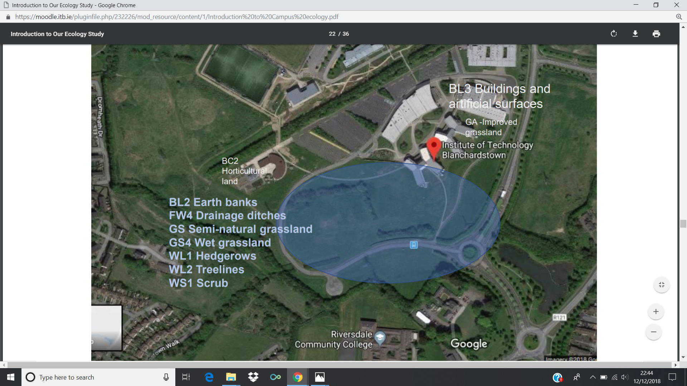
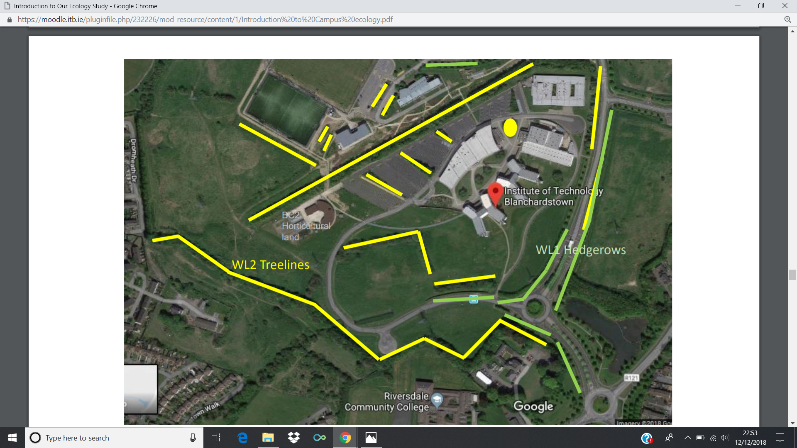

ITB local Area

Grassland

Semi-Natural Grassland

Ecology and biodiversity is important to ITB. ITB's motivation is to raise awarness of biodiversity on its campus, recognise it heritage value, sustain drainage, show the role of horticulture as part of Ireland’s Climate Change Strategyand draw attention to the role of the grasslands as part of the green infrastructure. Plants are diverse and hedgegrows are over a 100 years old. The hedgerows in Fingal County account for 1200ha, of “linear woodland” cover. There is a drive to increase the woodland coverage in Fingal to 7650ha by 2030. Farm Ecology created the landscape of ITB as we know it. Over the last 40 years, farming has intensified to meet production demands. As a consequence, most of ITB's wildflower-rich meadows have been lost allowing grass species to grow tall provides shelter and overwintering sites for many ground beetles and spiders. ITB is an important amenity resource for the local communities, but also provides habitats for many species of flora and fauna. Buzzards and other predators visit the rough grassland areas to hunt. The abundant vegetation of these meadows provides the ideal habitat for rabbits. Foxes, thrush and blackbirds also roam ITB.